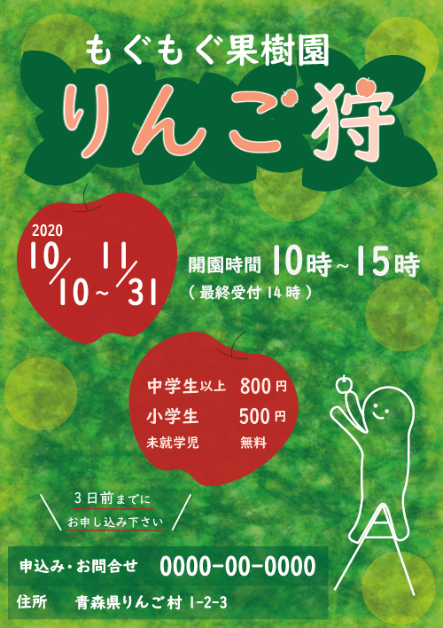
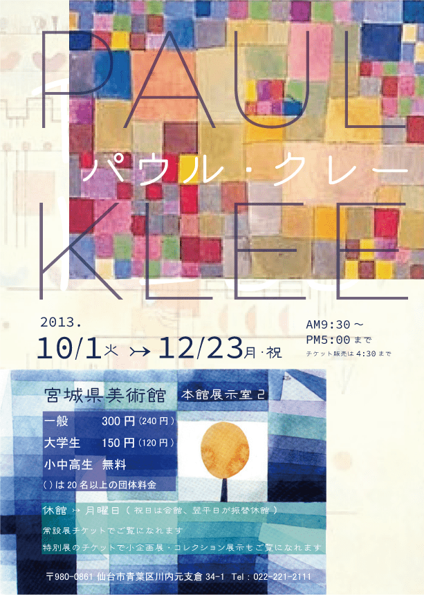

りんご狩

| 制作期間 | 2020/1/24-25 ( 2日 ) 制作 - 1.5日 / 手直し - 0.5日 |
|---|---|
| 制作ツール | illustrator ( 背景:ClipStudio ) |
・ClipStudioで描いた背景をillustratorに読み込んで作成しました。
・文字組に気を配りました。
・子どもも参加できるイベントなので、柔らかい印象の書体を使いました。
・目立たせたい所に、緑の反対色の赤を使用しました。
美術展

| 制作期間 | 2019/12/2 ( 1.5日 ) |
|---|---|
| 制作ツール | illustrator |
・過去に観に行った美術展のフライヤーを制作しました。
・Kleeらしさを表すために、「FOT-クレーPro M」「VDLヨタGM」他、抽象的で柔らかい印象を与える書体を組み合わせて使用しました。
・絵の上に文字を重ねているので、可読性が低下しないように注意しました。
スキー


| 制作期間 | 2020/1/17 ( 2日 ) シルエット - 1時間 / 制作 - 2日 |
|---|---|
| 制作ツール | illustrator シルエット - 手描き / 画像 - iphoneSE |
・2020年にスキー場で撮影した写真を使用しました。
・地面と空は別の写真なので、上下に分けて中央にロゴやイラストを配置することで、違和感が生じないようにしています。
・1枚目はシルエットの大きさを控えめにして三角形で表現した雪を目立たせることで繊細な雪景色の印象に、2枚目はシルエットを大きく配置して、ダイナミックな印象にしました。